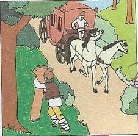
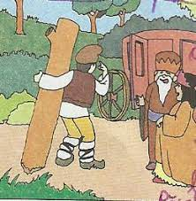
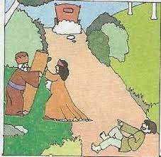

Odată, Păcală stătea la marginea unei păduri. Deodată vede o trăsură venind spre el. Repede se scoală, ia un trunchi mare de copac, şi-l ridică drept în sus. În trăsură era boierul, cucoana şi vizitiul, care mâna caii. Boierul, văzând pe Păcală, spuse vizitiului să oprească trăsura:
– Bună ziua!
Păcală răspunde:
– Mulţămim!
– Dar ce faci aici?
– D-apoi, cucoane, ia, am pus şi eu lemnul ista să se hodinească olecuţă, că apoi îl duc acasă. Da’ dumneavoastră unde vă duceţi?
– Eu am auzit de unul Păcală, care păcăleşte oamenii, şi mă duc să-l găsesc, să mă păcălească şi pe mine.
Păcală îi zice boierului:
– Nu te mai duce, cucoane, că eu sunt Păcală. Dar acum nu pot să vă păcălesc, că am uitat păcălitorul acasă. Daţi-vă jos din trăsură, să-mi aduc păcălitorul. Dumneavoastră, cucoane, ţineţi lemnul ista bine, să nu se clatine, că eu vin îndată.
Când boierul ţinea cât putea trunchiul să nu se clatine, Păcală se sui în trăsură şi plecă. Se face noapte, şi Păcală nu mai vine. Stau aşa toată noaptea şi a doua zi după-amiaza.
Numai ce trece un om.
– Bună ziua! zice omul.
– Bună ziua! îi răspunde boierul.
– Dar de ce staţi dumneavoastră acolea?
– Aşteptăm să vină Păcală de-acasă cu păcălitorul, să ne păcălească. Mi-a spus că vine degrabă cu trăsura, şi nu mai vine.
Atunci omul spune boierului:
– D-apoi, cucoane, nu-i destulă păcăleală asta, că s-a dus cu trăsură şi cu cai cu tot?
Şi aşa rămase boierul păcălit şi fără trăsură.